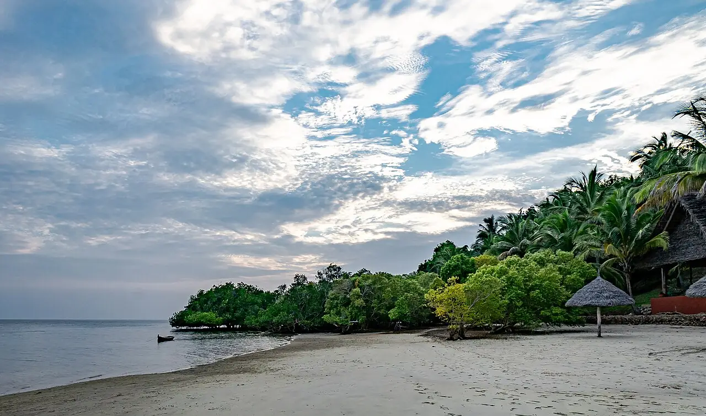

Chole Bay — Île de Mafia
Mafia, Tanzanie · snorkeling, plongée

Baie abritée au sud-est de l’île, au cœur du parc marin de l’île de Mafia : récifs coralliens, herbiers et passes pour la plongée. Les requins-baleines fréquentent la côte ouest, près de Kilindoni, en saison (surtout d’octobre à mars).
- Lieu
- Mafia, Tanzanie
- Niveau
- Variable selon les conditions
- Activités
- snorkeling, plongée
- Type d'eau
- Mer / océan
- Coordonnées
- -7.97, 39.75 (position approximative du secteur)
Dangers à connaître
- Courants forts dans les passes de Chole Bay selon la marée.
- Coraux fragiles : ne touche rien et ne marche pas sur le récif.
Le conseil d'Ocean Buddy
Des droits d’entrée au parc marin sont demandés : plonge avec un centre local qui connaît les horaires de marée des passes.
Ouvrir dans Ocean Buddy Télécharger sur l'App Store
Source : Fiche Ocean Buddy · septembre 2026 · à vérifier localement.